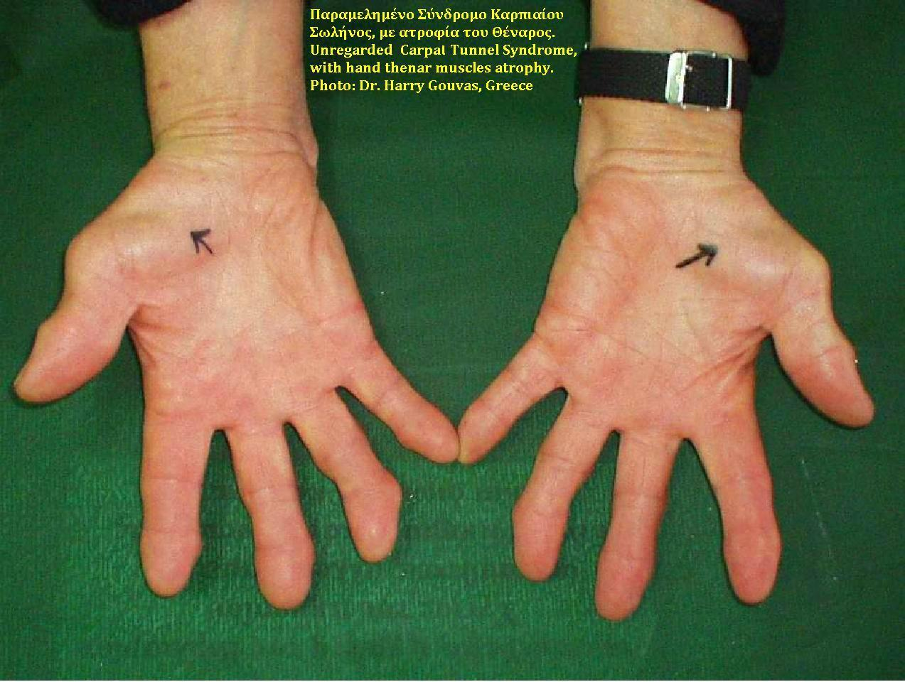

A frase que fecha a ELA na prova — e a vignette que a faz funcionar.
Idoso + fraqueza progressiva + 1º e 2º + fasciculação + mais nada = ELA.
1º NMS2º NMSmantrafalta a placa
Mantra de prova
Idoso + fraqueza progressiva + mistura de 1º e 2º + cheio de fasciculação + mais nada = esclerose lateral amiotrófica (ELA) — grande suspeita.
Vignette: mulher 72 a
Mulher, 72 anos, hipertensa e diabética. Procura ambulatório de neurologia com fraqueza em braço esquerdo há cerca de um ano. Dificuldade cada vez maior em atividades finas: abotoar a blusa ou escrever.
Anamnese dirigida: episódios de engasgo e tosse ao se alimentar há dois meses (bulbar). Há também fraqueza da musculatura do pescoço.
Exame:atrofia da musculatura tenar e miofasciculação em membro superior esquerdo. Hiperreflexia patelar e clonos em membro inferior direito.
Pergunta: o diagnóstico mais provável é…?
Leitura da vignette
Fraqueza assimétrica progressiva.
Segundo neurônio: miofasciculação e atrofia na região tenar.
Primeiro neurônio: hiperreflexia e clonos (manifestação de 1º), corroborando o quadro misto.
Única resposta possível no espírito da vignette: ELA.
Tenar × hipotenar
Região tenar = eminência gordinha perto do dedão (polegar); região hipotenar = a outra eminência da borda ulnar da mão. Atrofia tenar = achado de 2º NMS na mão.
Mapa da fraqueza e ponte
No mapa da fraqueza: abordagem sindrômica → mistura 1º+2º (ELA) → falta a placa motora. Nas linhas de 1º e de 2º, a doença-exemplo mista agora é a ELA.
Monte o mantra da ELA
idosofraqueza progressiva1º e 2º juntoscheio de fasciculaçãomais nada
Idoso + fraqueza progressiva + 1º e 2º + fasciculação + mais nada = ELA.

Atrofia de eminência tenar — setas no tenar. Achado de 2º NMS na mão, peça da vignette 72 a.
By Δρ. Χαράλαμπος Γκούβας (Dr. Harry Gouvas / Prevezamuseum), via Wikimedia Commons · Attribution-only (free use with attribution) · fonte
O tenar da vignette
A foto nomeia a região que a vignette descreve: a eminência gordinha do polegar, agora atrófica. É o 2º na mão — e a peça que, lida com clonos e bulbar, fecha o pacote ELA sem precisar de mais nada.
Mão: tenar × hipotenar na ELA
Mão palmar: tenar destacado (“atrofia”) e hipotenar rotulado para contraste; chip “achado de 2º NMS”.
Ponte — falta a placa motora
No mapa da fraqueza, o andar que ainda falta é a placa motora: o sítio da sinapse neuromuscular, onde a força flutua com o uso. É o próximo sítio do mapa — o outro lado do 2º, longe do corpo do neurônio que a ELA mata.
Quiz — fixação
Mulher 72 a, fraqueza MSE há 1 ano (abotoar/escrever), engasgo há 2 meses, atrofia tenar + fasciculação no MSE, hiperreflexia patelar + clonos no MID. Diagnóstico mais provável:
(A) padrão agudo flácido arreflexo, não misto piramidal crônico. (B) flutuação/placa, sem atrofia tenar + clonos assim. (D) não amarra multifocal progressivo 1º+2º + bulbar em um ano. Cai em A porque “fraqueza + motor” puxa o molde do GBS; falta o tempo e o 1º. Cai em B porque bulbar e fraqueza fina puxam placa — mas atrofia + fasciculação + clonos não são o molde da placa.
No mantra de prova da ELA, o elemento indispensável além de idoso e fraqueza progressiva é:
Gabarito B. O mantra de prova é o pacote completo — mistura + fasciculação + motor puro.
(A) sensitivo mata ELA típica. (C) infecção SNC. (D) incompleto (falta 2º). Cai em D porque piramidal sozinho não é ELA.